Practice Log n Share
2026年9月
概览
练习时轻点一下就能记录，上课时直接把同一个画面展示给老师。为了自己的萨克斯学习，我策划并设计了这款 iPhone 应用，并与 AI 协作完成开发。


- 职责
- 策划、UX/UI 设计、开发（与 Claude Code、Codex 协作）
- 时间
- 2026年9月
- 技术
- React · TypeScript; Swift (WKWebView, Live Activity, StoreKit, iCloud)
试用 Web 演示（收录截至2026年9月20日的本人练习记录）
缘起——面对“最近练得怎么样？”，我答不上来
每两周上一次课，即使回答“主要练音阶”，也无法说明具体练了什么、练了多久。萨克斯挂在脖子上时很难写纸质日志，而试过的计时应用都是供自己回顾记录的工具。

记录——手持乐器，轻点一下
练习时只需操作分类卡片。轻点开始计时，点另一张切换，再点同一张停止。
- 1 积累
- 至今的练习。打开应用最先看到的内容。
- 2 今日
- 练习顺序与时间分配。满一小时填满。
- 3 计时中
- 仅此卡片变亮，并以白色边框标示。
- 4 卡片
- 轻点切换。突出显示今日时长。
一天——填满的进度条，始终保持填满
今日进度条在一小时处填满。超过一小时后，以当前总时长作为右端，避免已经填满的条形再次出现空白。
今日练习 — 1小时05分钟
采用
弃用
积累——从第一天起，全部看得见
以绿色深浅表示练习日，以红框标记上课日期，横向滚动可追溯到开始记录的那一天。相比减轻渲染负担，我更看重能够查看多年的练习。

分享——课程开始时，一屏便能说明
把上次上课至今的练习汇总为各分类总时长和每日明细，直接展示给老师。每日表格即使缩小文字，也要在一屏内放下所有分类，免去横向滚动。

演变——让卡片成为练习的操作面板
根据与 AI 对话整理出的规格文档搭建界面，反复亲自操作并修改。先在早期 Web 版中探索记录与分享的形式，再实现为 iPhone 应用。

9月9日
初版

9月21日
Web 版
9月24日
iOS 1.0
- 名称与时长放在一起
- 在卡片上突出显示今日时长，将练了什么与练了多久关联起来。
- 当前状态，一目了然
- 只让计时中的卡片变亮，其余卡片调暗。
- 操作范围留在屏幕内
- 让滚动停在整排卡片能完整显示于屏幕内的位置。
开发后期，反复进行了约15轮流程：Claude Code 提出潜在问题，Codex 验证并修复，由我决定是否采纳。
手感——如何停下来，亲手试过再选
仅靠文字要求，无法做出“流畅移动、利落停稳”的手感。我与 AI 开发了可即时切换方式和数值的调节工具，在真机上比较五种方式后，选择了浏览器原生的滚动吸附。
隆起曲线型

落点预测型

浏览器原生 proximity
采用

浏览器原生 mandatory

无吸附


作为产品——练习之外
外观随设备设置切换。练习记录保存在设备本地，并自动备份至 iCloud。

实际使用——下一个问题是，记录要细到什么程度
每天早晨练习时使用，并在课上向老师展示画面后，得到的反馈是练习内容一目了然，如果连音阶种类也能记录就更有帮助（大意）。我正在考虑在分类下再加一层，在保持便捷的同时记录更多细节。
资料
Web 演示可体验记录与分享功能。收录截至2026年9月20日的本人练习记录，操作结果仅保存在当前浏览器中。